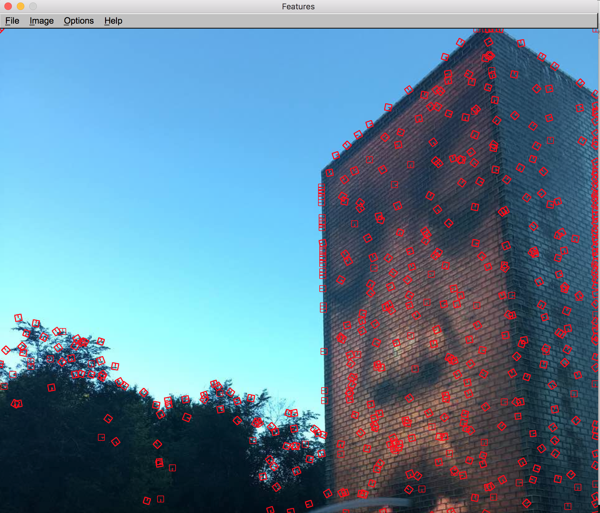
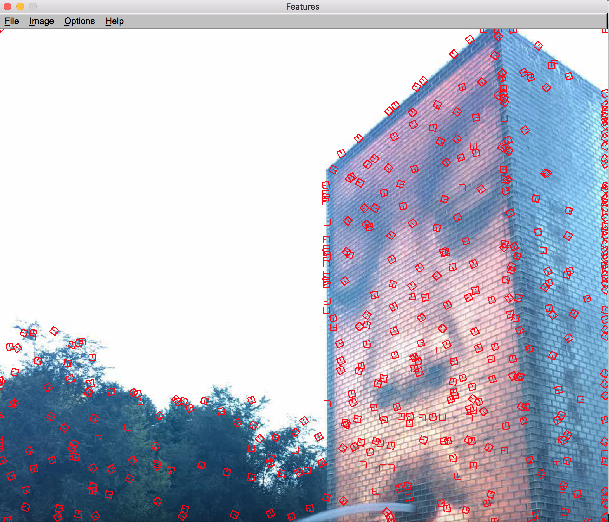
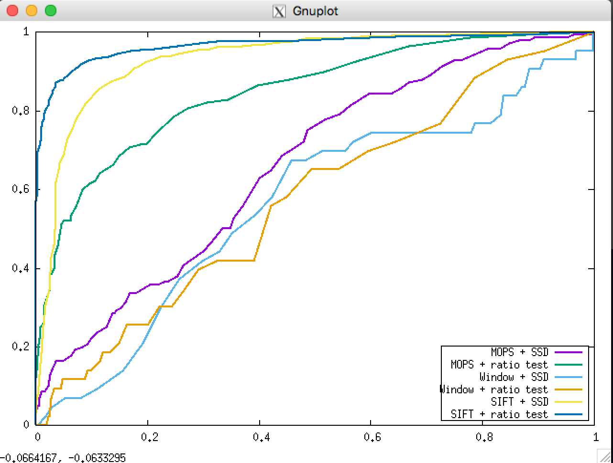
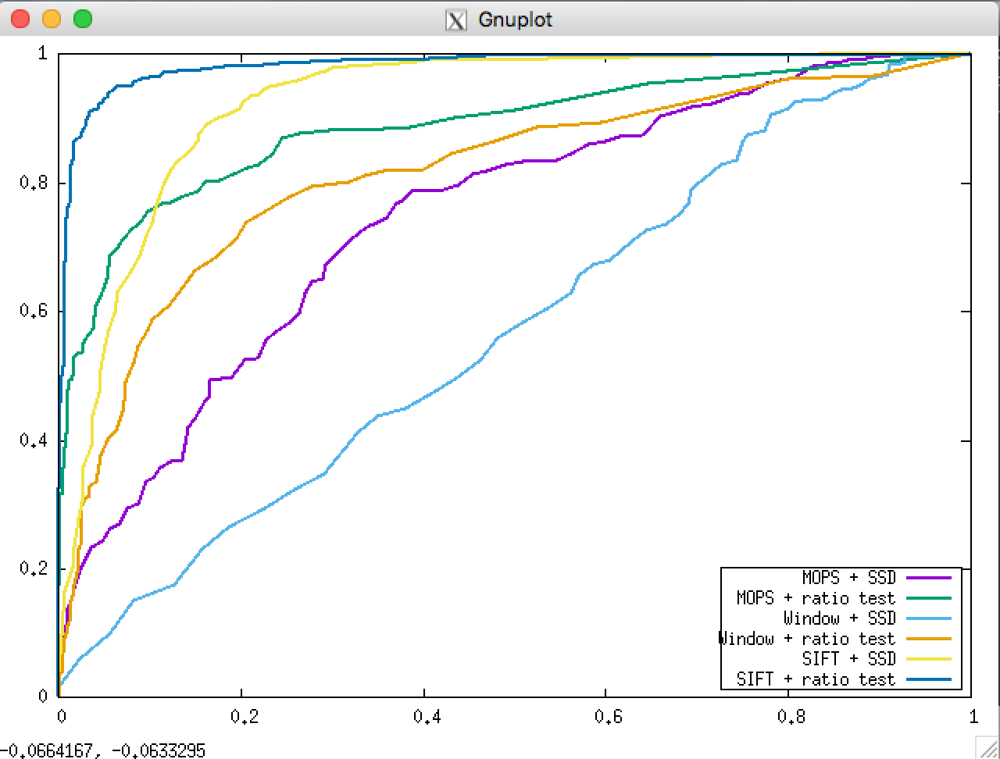

Project Description
Feature detection
I implemented a basic feature detection algorithm mentioned in Chapter 4.1. The procedure is as follows:
1. Compute the horizontal and vertical derivatives of the srcImage Ix and Iy by convolving the original image with SobelX and SobelY kernels.
2. Compute three images corresponding to the outer product of these gradients. (.* indicates pixel-wise multiplication)
a. H11 = Ix .* Ix
b. H12 = Ix .* Iy
c. H22 = Iy .* Iy
3. Convolve each of these three images with a larger Gaussian kernel.
4. Compute a scalar interest measure using harmonic mean.
5. Find if each pixel is a local maximum by choosing approriate threshold (I choose 0.05 as a threshold).
1. At first, I use the derivatives of Gaussians (window size 5x5 and sigma = 1) in the step one because a paper said the results are better than the other kernels. However, after doing some tests in the data set, I found that Sobel kernel works better than Gaussians (in this case).
Harris Operator ImageHere are the images of the Harris operator.
| srcImage | HarrisImage |
|---|---|
| '1' | '2' |
|---|---|
|  |  |
Feature Desriptor
I implemented two descriptors, the simple 5x5 window descriptor and MOPS descriptor.
5x5 Window DescriptorSimply save the surrounding 5x5=25 pixels of the center feature pixel.
MOPS DesriptorThe custom one is MOPS desriptor. 1. Before loop through the features, convolve the image with a gaussian blur filter to get more accurate results during subsampling. 2. For each feature, focus on a 40x40 window size subimage around the feature and scale the image down by a factor of five, create a 8x8 image. 3. Rotate the image by dominate orientation to the horizontal.
Feature Matching
Basicly, I use two methods: SSD Matching and Ratio Distance Matching.
ROC curve
| 'graf' | 'leuven' |
|---|---|
|  |  |
| Compare | wall | graf | leuven | bike |
|---|---|---|---|---|
| window + ssd | 0.699973 | 0.444535 | 0.418947 | 0.197086 |
| window + ratio | 0.829765 | 0.494532 | 0.775451 | 0.576539 |
| mops + ssd | 0.752798 | 0.481204 | 0.788676 | 0.861049 |
| mops + ratio | 0.844074 | 0.595981 | 0.908687 | 0.882707 |
- The "wall" set has much more feature points than other datasets, so when testing the AUC value, it takes longer time to complete than others. However, its result is the best among others.
- The 'graf' set differs in orientations. From the result above, we can see that although MOPS has a relatively higher AUC value than the simple window algorithm, its value are still lower than other situations.
- The 'leuven' set differs in contrast. Using the normalization we can achieve much higher AUC value.
- The 'bikes' set differs in resolution. So it is often used to test scale invariance. The window + ssd algorithm did a bad job when testing this dataset. As we can see, MOPS improves a lot while window algorithm is fairly low.
Bell & Whistles(Extra Points)
Adaptive Non-Maximal Suppression (ANMS)When we get the harris corners, it returns too many feature points, while not all of them are useful for matching. As a result, we only need to select part of them (fixed number points), and at the same time, making the selected points spread evenly across the whole image. To achieve this purpose, I try to implement the ANMS algorithm described in Multi-Image Matching using Multi-Scale Oriented Patches.I use an equivalent approach without search of radius r. My thoughts are as follows: 1. Loop through all the local maximal value pixels in the image, for each pixel, loop through all the other local maximal points to find the closest point. First finding all possible points that have more than 1.11 times the corner strength of a certain point. I then find the smallest squared Euclidian distance between this point and a point in the described set. This is the minimum suppression radius. I perform this operation on all points and choose the 700 points with the highest suppression radiuses.
ResultsBelow are different corner detection results without ANMS and with ANMS:
| without ANMS | with ANMS |
|---|---|
 |
 |